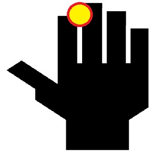
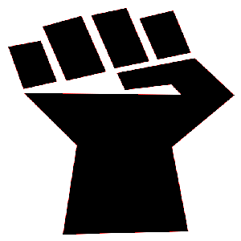

Loading…

How to draw: Put your palm facing the camera with your hands wide open. Move your hand to start drawing!

How to Pause: Make a fist or move your hand out your cameras view! To start drawing again open your hand back up!
Score: 0
Point and click drawing with your mouse also works!